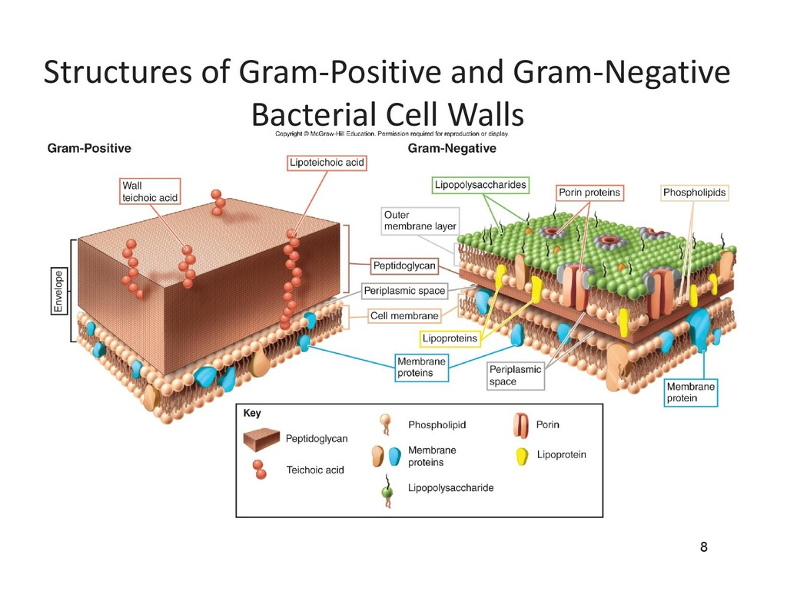
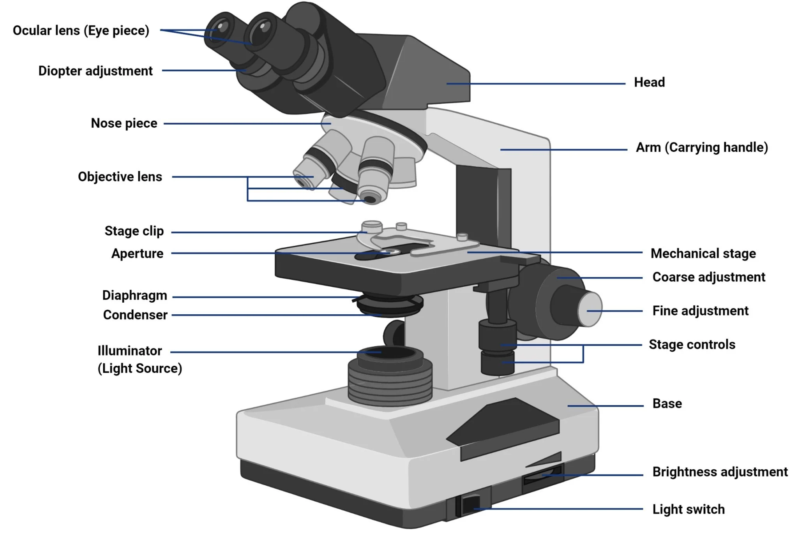

Week 03 – Microscopy
Overview
Transfer techniques/ Rainbow Lab, Bright field microscopy, Virtual Microscopy, Review gram stain slides.
Learning Objectives
- Perform accurate transfers between sterile media using aseptic technique.
- Compare different inoculation tools and justify appropriate use during culture transfers.
- Begin documenting observations and procedures in a research journal for the long‑term soil/bug project.
- Properly operate a brightfield microscope, including focusing at all magnification levels.
- Compare bacterial cell arrangements and morphologies observed under the microscope.
- Evaluate Gram-stained slides and differentiate between Gram-positive and Gram-negative organisms.
Protocol
Images
Add images to the images folder and display them below:





Don't Forget- Mention
- Virtual Microscopy in Blackboard if Need Review
- AI usage